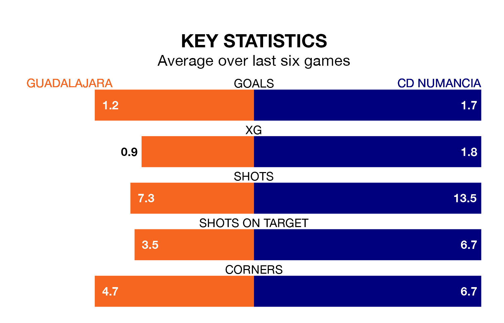

Sunday's match between Guadalajara and CD Numancia promises to be one for the neutrals, as two of the Segunda División RFEF Group 5's most free-scoring sides go head-to-head.
Ahead of the game at the Estadio Pedro Escartín, Guadalajara and Numancia sit joint-fourth and second in the goal-scoring charts, with 37 and 47 goals respectively.
Striker Diego Morcillo Muñoz leads the way for the home side, having bagged 14 goals in their 28 games to date.
And Andrei Daniel Lupu has been the main man in the opponents' penalty box for Numancia, with nine goals.
Numancia are second in the table after 29 games, of which they have won 15 and drawn six, earning 51 points.
Guadalajara are seven places behind the visitors in ninth, with 12 wins and four draws putting them on 40 points.
The home team are in mixed form in the Segunda División RFEF Group 5, with three wins and a draw from their last six games.
With four wins and a draw over that period, Numancia's form is better – they have taken 13 points from 18, compared to Guadalajara's 10.
Guadalajara's last match was on March 31, a 2-1 win against Illescas, with Iván Moreno Rodríguez getting the goals for Guadalajara.
Numancia beat AD Unión Adarve 1-0 last time out, on March 30, with Diego Royo Arellano on the scoresheet.
Updated: 16:41 (UTC), 04/04/24